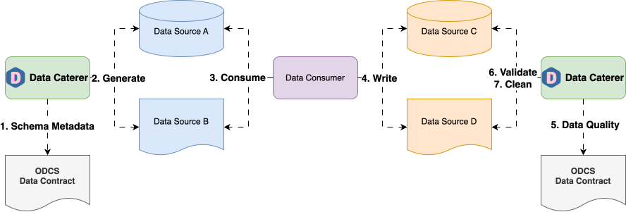

Data Contract CLI Source

Creating a data generator for a CSV file based on metadata stored in Data Contract CLI.
Requirements
- 10 minutes
- Git
- Gradle
- Docker
Get Started
First, we will clone the data-caterer-example repo which will already have the base project setup required.
Data Contract CLI Setup
We will be using the following Data Contract CLI file for this example.
Plan Setup
Create a file depending on which interface you want to use.
- Java:
src/main/java/io/github/datacatering/plan/MyAdvancedDataContractCliJavaPlanRun.java - Scala:
src/main/scala/io/github/datacatering/plan/MyAdvancedDataContractCliPlanRun.scala - YAML:
docker/data/customer/plan/my-datacontract-cli.yaml
In docker/data/custom/plan/my-datacontract-cli.yaml:
name: "my_datacontract_cli_plan"
description: "Create account data in CSV via Data Contract CLI metadata"
tasks:
- name: "csv_account_file"
dataSourceName: "customer_accounts"
In docker/data/custom/application.conf:
- Click on
Advanced Configurationtowards the bottom of the screen - Click on
Flagand click onUnique Check - Click on
Folderand enter/tmp/data-caterer/reportforGenerated Reports Folder Path
We will enable generate plan and tasks so that we can read from external sources for metadata and save the reports under a folder we can easily access.
Schema
We can point the schema of a data source to our Data Contract CLI file.
In docker/data/custom/task/file/csv/csv-datacontract-cli-account-task.yaml:
- Click on
Connectiontab at the top - Select
Data Contract CLIas the data source and enterexample-datacontract-cli - Copy this file into
/tmp/datacontract-cli/datacontract.yaml - Enter
/tmp/datacontract-cli/datacontract.yamlas theContract File
The above defines that the schema will come from Data Contract CLI, which is a type of metadata source
that contains information about schemas.
Specifically, it points to the schema provided here
in the docker/mount/datacontract-cli folder of data-caterer-example repo.
Run
Let's try run and see what happens.
It should look something like this.
province_state,latitude,confirmed,fips,longitude,country_region,last_update,combined_key,admin2
fwFaFV F73BAIfFd,69977.84296117249,17533,ln9 CRbGkQ9IEyuW,793.3222856184141,87YVVqgS1podHa S,2024-02-10T10:25:39.176Z,sAnv74T9xOyA6MZI,06iRhvBBy40WBlVf
W9N6z1 s7CYyc4L3,54580.231575916325,96761,4mxWLbwArVKOhg6E,58977.422371028944,TkCABcFIYJf87okg,2024-09-07T17:45:27.641Z,9GDm6MGk3WfPdorc,TQdRvrCSgCXg ioP
dp2E6zXwoSKJ5 J2,13368.961196453121,18606,wGJ3iQNg5SdaN4ad,22482.40836235147,r4 Ka6J9ZNKQVEHK,2024-01-25T14:01:09.224Z,RYh6Kl5 46QvOZFR,eEad607OtQX15Vlw
sfQG0neaO5hS7PlV,17461.556283773938,40155,DeSwWCpYwa4WFx5F,81371.85361585379,F2 tzIJS9JsTlhuE,2024-06-13T08:44:55.555Z,JnnGplRjkjo6SgOX,8B5h7UuV2r965wD4
rAISjVikM0ScAsRX,65831.49716656232,36392,vKhuncOokeDgia7e,67677.50911541228,zZVJkymK09ef5oFC,2024-01-01T14:32:02.881Z,lLdHa4JExfuN2FXv,ebcPhXgYJMYTAla1
Looks like we have some data now. But we can do better and add some enhancements to it.
Custom metadata
We can see from the data generated, that it isn't quite what we want. Sometimes, the metadata is not sufficient for us to produce production-like data yet, and we want to manually edit it. Let's try to add some enhancements to it.
Let's make the latitude and longitude fields make sense. latitude is meant to be between -90 to 90 whilst
longitude is between -180 to 180. country_region should also represent a state name.
For the full guide on data generation options,
check the following page.
var accountTask = csv("my_csv", "/opt/app/data/account-datacontract-cli", Map.of("header", "true"))
.fields(metadata...)
.fields(
field().name("latitude").min(-90).max(90),
field().name("longitude").min(-180).max(180),
field().name("country_region").expression("#{Address.state}")
)
.count(count().records(100));
val accountTask = csv("customer_accounts", "/opt/app/data/customer/account-datacontract-cli", Map("header" -> "true"))
.fields(metadata...)
.fields(
field.name("latitude").min(-90).max(90),
field.name("longitude").min(-180).max(180),
field.name("country_region").expression("#{Address.state}")
)
.count(count.records(100))
In docker/data/custom/task/file/csv/csv-odcs-account-task.yaml:
name: "csv_account_file"
steps:
- name: "accounts"
type: "csv"
options:
path: "/opt/app/data/csv/account-datacontract-cli"
metadataSourceType: "dataContractCli"
dataContractFile: "/opt/app/mount/datacontract-cli/datacontract.yaml"
count:
records: 100
fields:
- name: "latitude"
options:
min: -90
max: 90
- name: "longitude"
options:
min: -180
max: 180
- name: "country_region"
options:
expression: "#{Address.state}"
- Click on
Generationand tick theManualcheckbox - Click on
+ Field- Go to
latitudefield - Select data type as
double - Click on
+dropdown next todoubledata type - Click
Minand enter-90 - Click
Maxand enter90
- Go to
- Click on
+ Field- Go to
longitudefield - Select data type as
double - Click on
+dropdown next todoubledata type - Click
Minand enter-180 - Click
Maxand enter180
- Go to
- Click on
+ Field- Go to
country_regionfield - Click on
+dropdown next tostringdata type - Click
Faker Expressionand enter#{Address.state}
- Go to
Let's test it out by running it again
province_state,latitude,confirmed,fips,longitude,country_region,last_update,combined_key,admin2
HY5GstfIPnXT0em,35.73941132584518,63652,6YS4JJvZ8N9JsqT,27.037747952451554,Connecticut,2023-12-24T12:42:08.798Z,qIPco7WUo5jXA D,ODADv25VyKsf6Qn
vnkQrkwgf9oj xR,81.87829759208316,73064,cPgrOuPwBVnxK2b,-146.20644012308924,Illinois,2024-03-14T10:24:52.327Z,7NYzdyaM87VjlfH,KUpbi4msmXWZYS4
jnSwW Pk6zj1LsC,82.87970774482852,72341,rL5XqKZtM5unS9x,-153.1279291007243,Mississippi,2024-08-29T15:30:56.338Z,NouXv6EXlWY1Ihe,mirpEgTno0OEDH8
ZmNNb9C5g t8CgJ,43.58312642271184,73116,NFlRmB8p0egkFqG,179.56650534615852,Indiana,2024-01-22T17:05:51.968Z,Fkxf0l3CC a42o5,JznmesYH8ReGhg3
Uf5QH6luS4u5SnO,-75.64320251178277,6232,yRQLBU2OQvm5uqC,-31.025626492871083,New Jersey,2024-09-25T02:35:03.477Z,7IXVfeL6BEpkRbf,f7wUqnigV8WU4B
Great! Now we have the ability to get schema information from an external source, add our own metadata and generate data.
Data validation
To find out what data validation options are available, check this link.
Another aspect of Data Contract CLI that can be leveraged is the definition of data quality rules.
In a later version of Data Caterer, the data quality rules could be later imported and all run within Data Caterer.
Once available, it will be as easy as enabling data validations via enableGenerateValidations in configuration.
- Click on
Advanced Configurationtowards the bottom of the screen - Click on
Flagand click onGenerate Validations
Check out the full example under DataContractCliSourcePlanRun in the example repo.